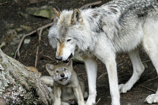

Life Cycle

By M L - unsplash
Gray wolves are monogamous, which means that they generally don't change mates throughout their lives. Females are capable of producing cubs every year, and they give birth to one litter of cubs annually on average. Breeding usually occurs between late January and April. During the summer, females typically choose natural shelters to construct dens. When pregnant, female wolves will choose a den situated far from the edges of their territories to avoid conflicts with neighboring packs.
After a gestation period of 62 to 75 days, the cubs are born. Young females usually give birth to four to five young, while older females may have six to eight. The newborn cubs can't see or hear, and are covered in short soft greyish-brown fur. They begin to see at about 10 days after birth. They grow rapidly during their first four months of life and will be mature enough to accompany adults on hunts for large prey by autumn. Finally, they will become mature at the age of two years and sexually mature at the age of three years.